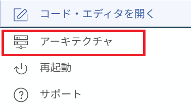
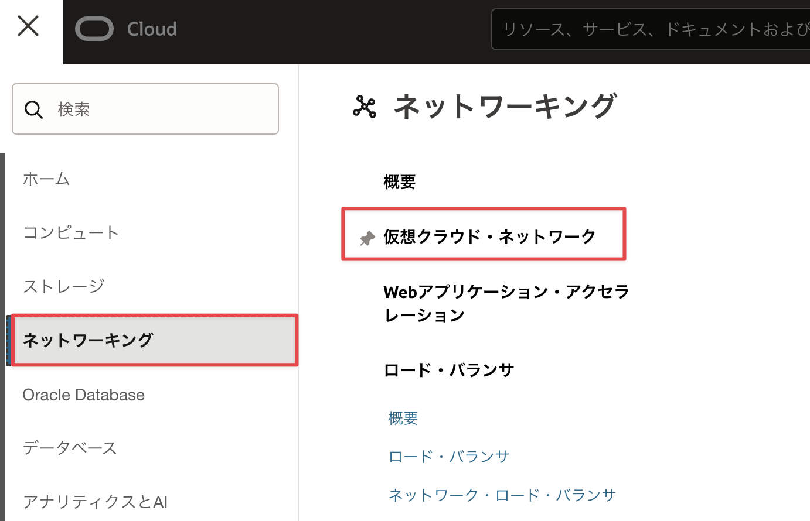
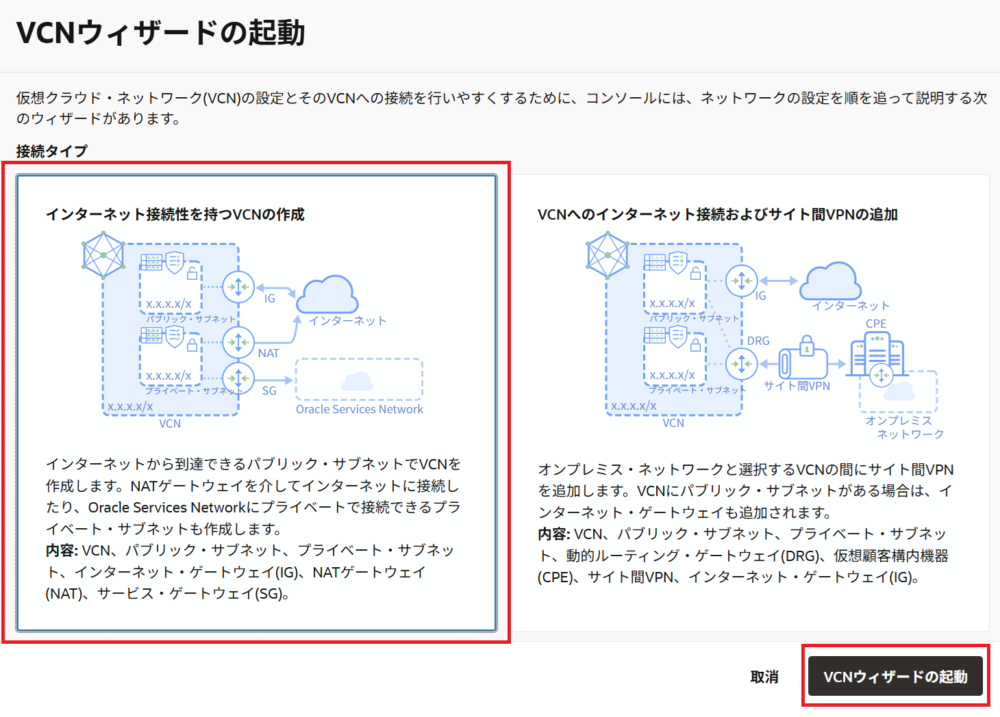
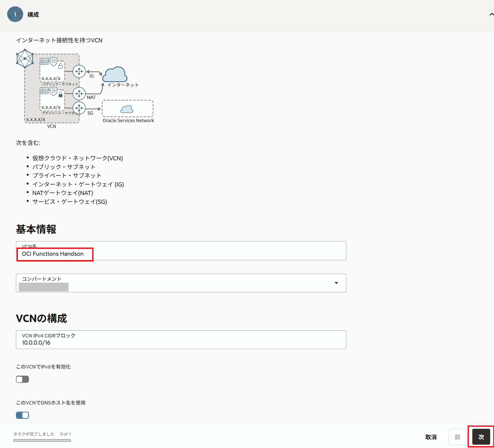
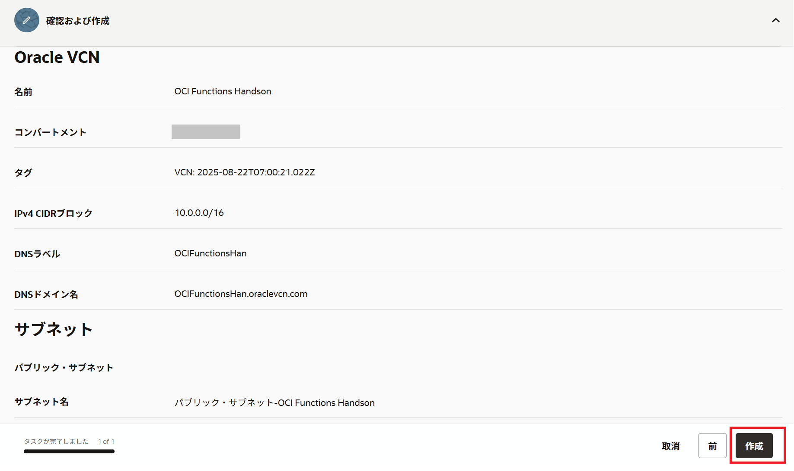
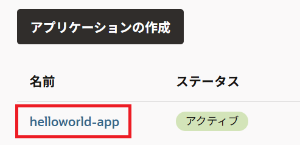
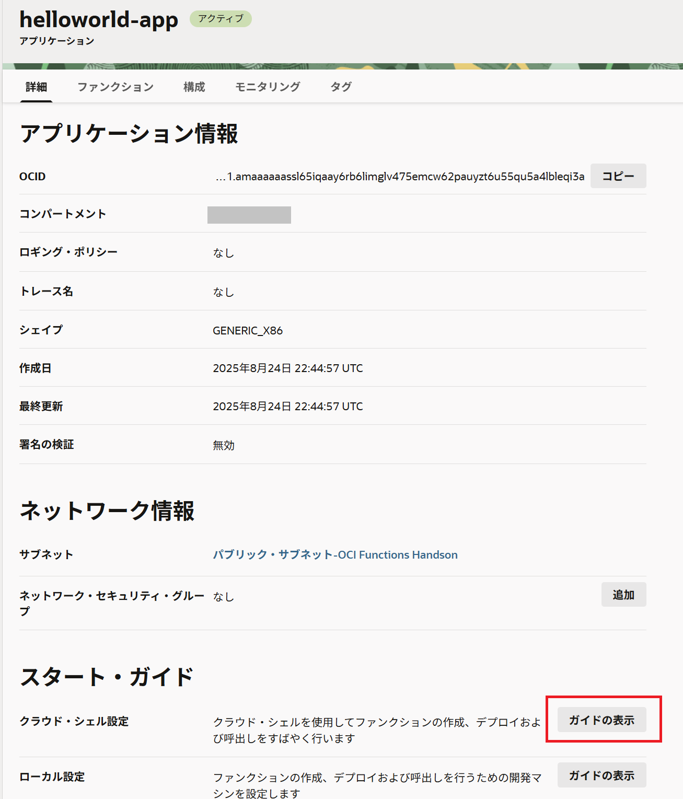

OCI Functionsは、Oracleが提供するオープンソースのFaaSプラットフォームであるFn Projectのマネージドサービスです。
このエントリーでは、OCI Functions環境構築から動作確認までの手順を記します。
条件
- クラウド環境
- 有効なOracle Cloudアカウントがあること
- Fn Projectハンズオンが完了していること(このハンズオンの理解を深めるため)
1.Cloud Shellのセットアップ
本ハンズオンではOKEクラスターを操作するいくつかのCLIを実行するための環境としてCloud Shellと呼ばれるサービスを使用します。 Cloud ShellはOracle CloudコンソールからアクセスできるWebブラウザベースのコンソールです。 Cloud Shellには、OCI CLIをはじめとして、次のようないくつかの便利なツールおよびユーティリティの現在のバージョンがインストールされています。 詳細は、公式ドキュメントの記載をご確認ください。
| インストール済みツール |
|---|
| Git |
| Java |
| Python (2および3) |
| SQL Plus |
| kubectl |
| helm |
| maven |
| gradle |
| terraform |
| ansible |
| fn |
Cloud Shellついて
Cloud Shellは開発専用ではなく、一時的にOCIコマンドを実行したい場合などライトなご利用を想定したサービスであるため、実運用時はCLI実行環境を別途ご用意ください。
OCIコンソール上で右上にあるターミナルのアイコンをクリックします。

しばらく待つと、Cloud Shellが起動されます。

デフォルトでは、Cloud Shellが利用しているCPUアーキテクチャがARMである可能性があります。
今回は、X86_64を利用したいので、利用するCPUアーキテクチャを修正します。
Cloud Shellの左側にあるアーキテクチャをクリックします。

希望するアーキテクチャをX86_64に変更し、確認して再起動をクリックします。
インスタンスの再起動というダイアログが表示されたら、再起動をクリックします。

しばらくすると、Cloud Shellが起動します。
起動後に以下のコマンドで確認してみましょう。
このハンズオンに必要なCLI(fnコマンド)はデフォルトでインストール済みです。
fn --version
以下のような結果となれば、fnコマンドは正常にインストールされています。
fn version 0.6.33
以上で、準備作業は完了です。
2.OCI Function Hello World
ここでは、OCI Functionsを動作させるための環境を構築します。
2-1. OCI Functionsが利用するVCNの作成
Oracle Cloudのダッシューボードにログインし、ダッシューボード画面のハンバーガメニューでネットワーキング=>仮想クラウド・ネットワーキングをクリックします。

VCNウィザードの起動をクリックします。

インターネット接続性を持つVCNの作成を選択し、VCNウィザードの起動をクリックします。

VCN名に任意の名前(こだわりがなければOCI Functions Handson)を入力し、他はデフォルトのまま、次をクリックします。

作成をクリックします。

以上で、VCN(ネットワーク)の作成は終わりです。
2-2. OCI Functionsのアプリケーションの作成
ここでは、OCI Functionsのアプリケーションの作成を行います。
OCIのコンソールに移り、開発者サービスのファンクションをクリックします。

アプリケーションの作成をクリックします。

名前にhelloworld-appと入力、VCNに2-1. OCI Functionsが利用するVCNの作成で作成したネットワーク名を選択、サブネットにVCNに紐づくパブリックサブネットを選択、シェイプにGENERIC_X86を選択し、作成をクリックします。

以上で、OCI Functionsのアプリケーションの作成は完了です。
2-3. OCI Functionsのサンプルアプリケーション実行
ここでは、OCI Functionsのサンプルアプリケーションを実行します。
アプリケーションの実行にはいくつかの手順が必要ですが、2-2. OCI Functionsのアプリケーションの作成で作成したアプリケーションにスタートガイドがあるので、こちらの手順をベースに実施します。
先ほど作成したアプリケーションをクリックします。

左下にある開始をクリックします。

こちらにJavaのサンプルアプリケーション実行までを整理した手順があるので、こちらをベースに移行の手順を実施します。
①~③については、ガイドにあるコマンドをCloud Shell上でそのまま実行してください。
④については、[repo-name-prefix]を任意のコンテナイメージ名に置き換えてCloud Shell上で実行してください。
集合ハンズオンや共有環境の場合
集合ハンズオンなどの1つの環境を複数人で共有している場合、コンテナイメージパスが重複する場合があります。
その場合は、コンテナイメージ名にイニシャルを付与するなど、重複をしないようにコンテナイメージ名をきめてください。
⑤については、ガイドのリンクをクリックします。
画面を下にスクロールし、トークンの生成”をクリックします。
“説明”に”This token is used for OCI Functions Handson”と入力し、”トークンの生成”をクリックします。
以下の画面が表示されるので、”コピー”をクリックし、これを手元のテキストエディタなどにペーストしておきます。

⑥〜⑪については、ガイドにあるコマンドをCloud Shell上でそのまま実行してください。
⑪の実行後に以下が表示されれば、OCI Functionsを無事に実行できています。
cloudshell:hello-java (ap-tokyo-1)$ fn invoke helloworld-app hello-java
Hello, world!